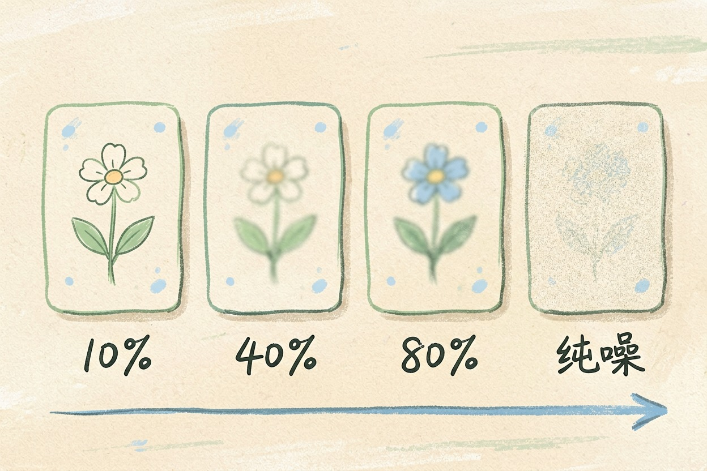
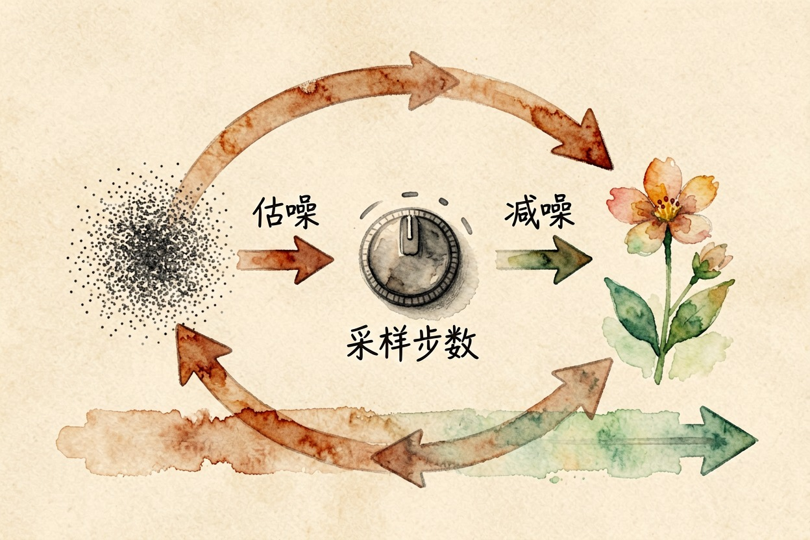
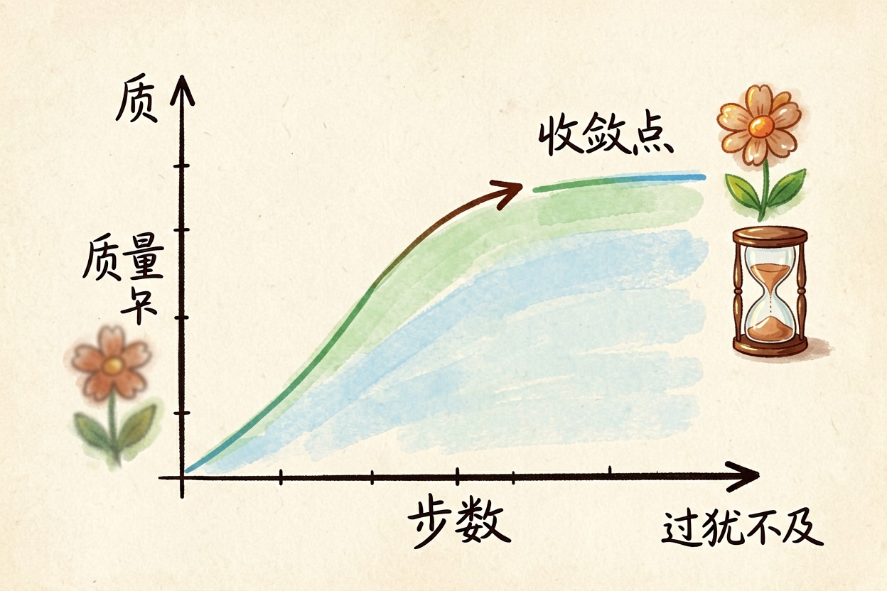

什么是扩散模型？从一团噪点到成图的过程 — Learntide
先教机器怎么把一张照片糊成雪花，再让它把这套动作倒着做一遍，画面就凭空长出来了。
什么是扩散模型：先学弄脏，再学擦净

什么是扩散模型？它是目前主流生图工具背后的那套方法。思路有点绕：想让机器学会画画，先教它怎么把画毁掉，再让它把这个过程倒着走一遍。
毁掉的方式叫加噪。往一张清晰照片上撒一层随机噪点，撒一次糊一点，撒几百次就成了一屏雪花。这一步不需要任何智能，纯粹是加干扰。
真正要学的是反过来那一半：给一张半糊的图，猜出这一层噪声长什么样，然后减掉它。
正向加噪其实是在出练习题

diffusion模型是什么，扩散模型原理的一半就在这批练习题里。
正向过程的价值在这儿。它自动造出海量带标准答案的样本。每张原图配上不同强度的噪声，就得到一组「问题」和「答案」：问题是加噪后的图，答案是加进去的那层噪声。
原图 → 加噪10% → 加噪40% → 加噪80% → 纯噪点
↑
训练时随机抽一档，让模型猜这一档加了多少噪数据不用人工标注，这是它能吃下海量素材的原因。训练目标也很单纯：把这层噪声估准。估得越准，反向还原时走得越稳。
反向去噪：几十步走完一张图

推理时从纯噪点起步。模型看一眼当前画面，估出该减的噪声，减掉一点，得到稍微清晰一些的图。然后重复。
文字提示词在这里起指路作用。每一步的估计都会参考它，所以画面会朝你描述的方向收敛。
采样步数就是这个循环跑几轮。步数少，图擦不干净，边缘和细节发糊。步数多到一定程度，画面几乎不再变化，只是更费时间。
同一句提示词每次出图都不同，因为起点那团噪点每次重抽。想复现，就把随机种子记下来。
各家工具的默认档位通常够用。真要调，先固定随机种子，再单独动步数，才看得出差别。
和 GAN 的区别在哪里
扩散模型和 GAN 的区别，是不少人容易搞混的一处。
上一代主流方法是 GAN，靠生成器和判别器互相对抗。它一步出图，速度快，但训练容易崩，生成结果的多样性也偏弱。
扩散模型走的是多步迭代路线。慢是真慢。好处是训练稳定、覆盖面广。中间每一步都能插手干预。局部重绘、参考图控制、结构约束这些玩法，都建立在「可以中途介入」这个特性上。
现在两条路线并没有谁完全取代谁。追求实时出图的场景，仍有蒸馏后的少步方案在用。
别把步数和质量画等号
新手最爱干的事，是把采样步数拉到很高，以为图就会更好看。可过了收敛点，画面变化微乎其微。等待时间却直线上涨。
真正影响成片的，是提示词写得清不清楚、模型选得对不对、分辨率和构图有没有配好。参数是最后微调的旋钮，不是主菜。
另外别把工具界面上的每个滑块都当成必须动的。默认值是团队反复试出来的，先在默认档跑通流程，再回头理解什么是扩散模型里各个参数的位置，调起来才不会瞎撞。
本文信息核对于 2026-08-08。AI 产品的价格、免费额度与功能变动频繁，实际以各工具官网当前说明为准。